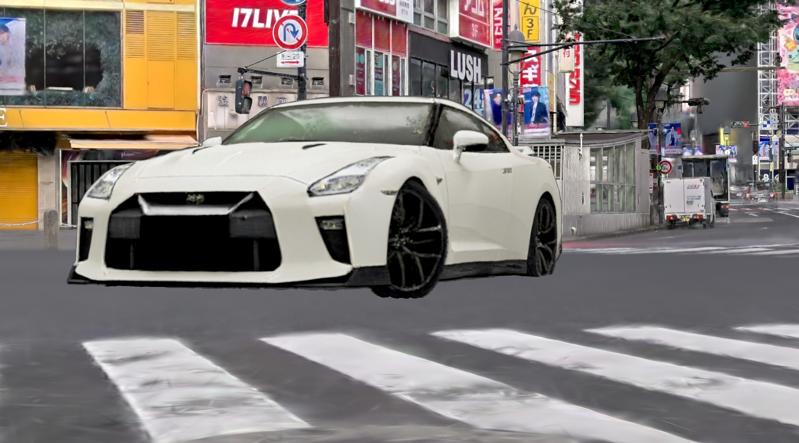

01 きっかけ：Houdini 22でのGaussian Splattingネイティブ対応
このワークフローの起点は、2026年7月にリリースされたHoudini 22でGaussian Splatting（3DGS）がネイティブ機能になったことです。これまで外部プラグインに頼るしかなかった3DGSを、通常の点群と同じようにHoudiniのノードで加工できるようになりました。標準の変形ノードでアニメーションさせることも、Karmaレンダラーでそのままレンダリングすることもできます。3DGSが「見るだけの背景素材」から3D DCCの中で加工できるレイヤーに変わったことが、このハイブリッドワークフローを成り立たせています。
02 ワークフローの流れ
hectorVFX氏が公開した制作画面の録画をもとに手順を整理すると、次の4ステップになります。ポイントは、背景（渋谷の3DGS）と被写体（車両）を別々の経路で用意し、どちらも「Gaussian Splatsのまま」Houdini上で1つのシーンに合成することです。2D画像の合成ではなく、点群同士を3D空間でマージします。
① Houdini 22：渋谷の3DGSをネイティブに読み込む
ロケハン3Dが提供した渋谷スクランブル交差点の3DGSデータを、Houdini 22にそのまま読み込みます。Gaussian Splatting専用ノードを通すことで、3DGSは「見るだけの点群」ではなく法線を持つジオメトリになり、他のノードと組み合わせて加工できる状態になります。
② ComfyUI：車両を「画像から3DGS」として生成する
被写体の白いスポーツカーは、写真合成ではなくComfyUI上でゼロから3D Gaussian Splatとして生成します。2D画像を作ってから3D化するのではなく、拡散モデルから直接3Dガウシアンを書き出すのがポイントです。メッシュに変換されずスプラットのまま出てくるため、①のHoudiniシーンにそのまま合流できます。
③ Houdiniで合成：2つの3DGSを1つのシーンへ
②で生成した車両スプラットをHoudiniに読み込み、①の渋谷シーンと結合します。位置・回転・スケールを合わせて交差点の横断歩道上に据えることで、実写スキャンとAI生成物という出自の違うデータが、1つの3Dシーンになります。
④ カメラ・ライティング・最終レンダリング
合成が済んだシーンにカメラを立て、モーションブラーと被写界深度を設定してレンダリングします。仕上げに夜間のネオン反射や濡れた路面のライティングでグレーディングすることで、記事冒頭の最終カットになります。
詳細スペック（再現したい方向け）
本文では省いた設定値です。録画から読み取れた範囲でまとめています。
- 環境データ（背景）
- 渋谷スクランブル交差点の3DGS（ロケハン3D提供）／ Houdini 22 Indie（build 22.0.368）のネイティブGaussian Splattingノード（bakegsplat / transform / normal / merge）で読み込み
- 被写体（車両）の生成
- ComfyUI ワークフロー "ER_TripoSplat_Live" ／ KSampler(steps 20, cfg 3.0, dpmpp_2m, simple, denoise 1.0) → TripoSplat Decode(num_gaussians 300,000) → Create 3D File (from Splat)
- 合成
- Houdini上でmergeノードにより2つの3DGSを1シーン化。Transform SOPで手動配置
- カメラ・レンダー
- Houdiniカメラ(cam1)／Shutter Time 0.5・Focus Distance 5・F-stop 5.6でモーションブラー・被写界深度を作り込み
03 制作画面の録画で見る、全体の流れ
hectorVFX氏からは、この一連の手順をキャプチャした33秒の画面録画も提供いただきました。Houdiniのシーングラフとビューポート、ComfyUIのノードグラフが実際にどう切り替わりながら進むのか、文章で読むより一目で伝わります。
04 Before / After：コンセプトから最終カットへ
今回シェアいただいた2枚の画像から、その工程の一端がうかがえます。

元となった投稿には、この工程を動画で解説したクリップも公開されています。あわせてご覧ください。
@hectorVFX元投稿を見る（動画あり） X (Twitter) で開く →05 使用データについて
今回のワークフローの舞台になっている渋谷スクランブル交差点のGaussian Splatsは、ロケハン3D代表・中村航が提供したデータです。実際にPortalCamで現場を歩いてスキャンしたデータが、海を越えて別のクリエイターの手で新しい表現に使われた、うれしい事例になりました。
この記事で使われている渋谷スクランブル交差点の3DGSデータは、
ロケハン3Dのオンライン版で購入・閲覧できます
PLY／OBJ形式（3DGSウォークスルー付き）で提供。スタンダードライセンス ¥200,000〜（商用・非商用利用可）。同じデータを使ってVFX × AIハイブリッドワークフローを試してみたい方は、ぜひご覧ください。
物件データを見る →06 まとめ
Houdini 22 の登場で、Gaussian Splats を「見るだけの素材」から「3Dシーンの中で本格的に制御できるレイヤー」として扱える環境が整いつつあります。ロケハン3Dのスキャンデータも、こうしたVFX × AIハイブリッドワークフローの土台として活用いただけます。同様の実験・制作にご興味のある方は、お気軽にお問い合わせください。